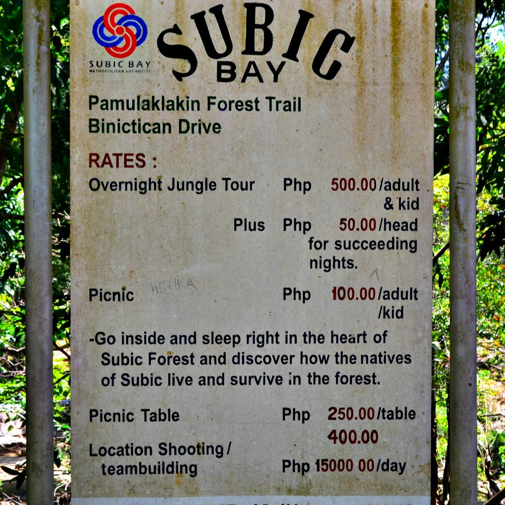

The Pamulaklakin River
The Pamulaklakin River in Subic Bay Freeport Zone, Philippines, is a serene and picturesque waterway that runs through lush greenery and mangrove forests. Its clear waters provide a habitat for various marine and bird species, making it a popular spot for nature lovers and outdoor enthusiasts. The river also plays a vital role in maintaining the ecosystem of the area and supporting the local community's livelihood through fishing and eco-tourism activities. With its natural beauty and importance, the Pamulaklakin River is a must-visit destination for anyone looking to explore the beauty of Subic Bay.

Location via google map
Pamulaklakin River at SubicAbout
The Pamulaklakin River is a significant natural resource located within the Subic Bay Freeport Zone in the Philippines.
The river has a rich history dating back to ancient times when it was used by the native Aetas for fishing and irrigation.
During the Spanish colonial period, the Pamulaklakin River played a crucial role in the development of the region as it served as a vital
transportation route for goods and supplies. The river was also used by the American forces during World War II for logistical purposes.
In recent years, efforts have been made to protect and preserve the Pamulaklakin River, as it is home to a diverse range of flora and fauna.
The river has become a popular destination for eco-tourism activities such as kayaking, bird watching, and river cruises.
The Subic Bay Metropolitan Authority (SBMA) has implemented various conservation programs to ensure the sustainability of the Pamulaklakin River
for future generations to enjoy. This includes regular clean-up drives, reforestation projects, and the enforcement of strict regulations to safeguard
the river's ecosystem.
Vehicle to use
There is a taxi available for transportation in front of Subic Gym.